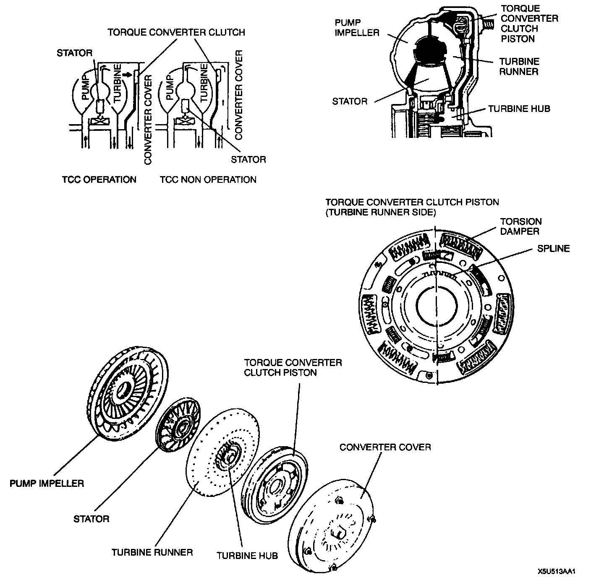

Torque Converter: Description and Operation
Torque Converter DescriptionOutline
- The torque converter improves driveability by transmitting the drive force through the use of fluid. However, in certain ranges, a difference in rotation between the pump and the turbine caused by slipping of the fluid, decreases the transmission efficiency of the drive force as well as fuel efficiency.
- The torque converter clutch mechanism under certain conditions transmits the drive force by automatically connecting the pump impeller with the turbine runner as opposed to using fluid. Therefore it prevents the torque converter from slipping in the manner mentioned above.
Construction

- The torque converter, which includes a torque converter clutch mechanism, houses the turbine runner, the pump impeller, the stator, and the torque converter clutch. The torque converter clutch is spline-fitted to the turbine hub. During torque converter clutch engagement, it slides over the turbine hub and is pressed tightly together with the converter cover. A torsion spring is installed in the torque converter clutch to absorb engine torque friction when the torque converter clutch is pressed onto the torque converter.